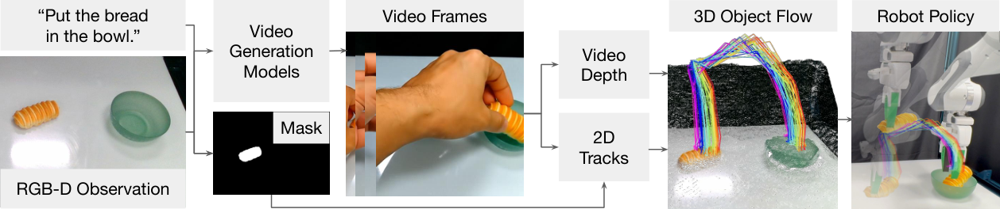
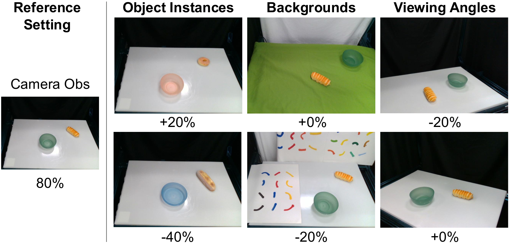
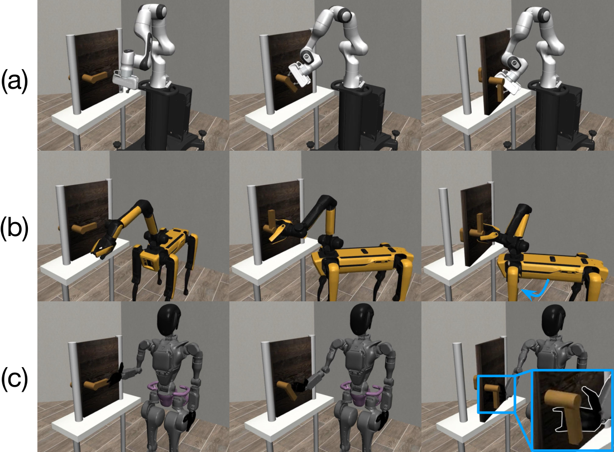
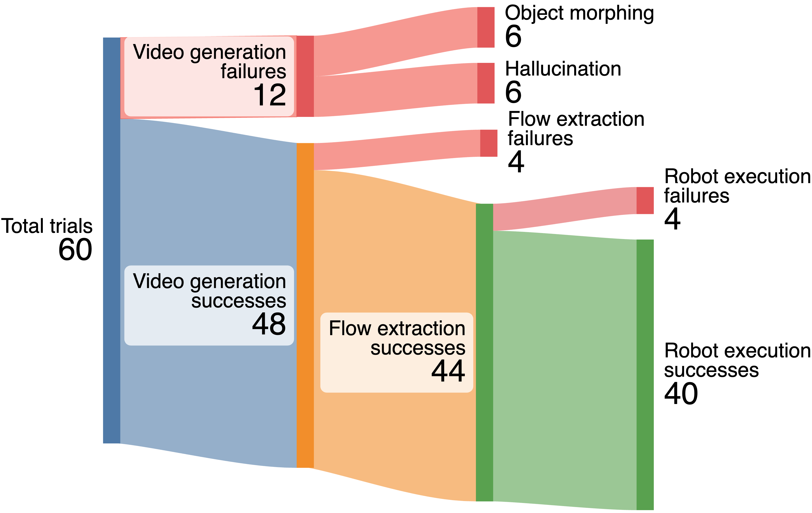

Dream2Flow: Bridging Video Generation and Open-World Manipulation with 3D Object Flow
这篇论文提出 Dream2Flow：把文本条件视频生成模型产生的“任务应该怎样发生”的视频，蒸馏成 3D object flow，再让机器人通过轨迹优化或强化学习去跟踪这个物体运动。
1. 论文速览
| 论文要解决什么 | 解决视频生成模型到机器人控制之间的接口问题。视频模型能生成合理的人类/物体交互视频，但机器人需要低层动作；直接模仿人手动作会遇到 embodiment gap，因此作者要把“世界中物体该如何运动”从“哪个机器人来实现”中解耦。 |
|---|---|
| 作者的方法抓手 | 使用 3D object flow 作为 video-control interface：先从生成视频中通过深度估计、分割和点跟踪恢复任务相关物体的 3D 点轨迹，再把操作写成 object trajectory tracking，用轨迹优化、粒子动力学规划或 SAC reward 生成动作。 |
| 最重要的结果 | 真实机器人三任务中 Dream2Flow 均优于 AVDC 和 RIGVID：Bread in Bowl 为 8/10，Open Oven 为 8/10，Cover Bowl 为 3/10；在 Open Door RL 中，3D object flow reward 达到 Franka 100/100、Spot 100/100、GR1 94/100，接近手工 object-state reward。 |
| 阅读时要注意的点 | 注意它和 NovaFlow 的相似与差异：两者都用生成视频到 3D flow 的接口，但 Dream2Flow 更强调 3D object flow 作为统一 reward/target，可服务于随机 shooting 规划、真实机器人刚性抓取轨迹优化，以及跨 embodiment 的强化学习。 |

2. 问题设定与动机
论文的动机很直接：视频生成模型已经能在开放场景中想象“物体怎样被操作”，但这些视频通常以人手为交互主体，而机器人和人手的动作空间、运动学、接触方式都不同。作者认为不应该直接模仿视频中的人手动作，而应该抽取视频中任务相关物体的 3D 运动。
因此 Dream2Flow 把任务转成 object trajectory tracking：视频模型负责给出“应该发生什么状态变化”，机器人模块负责决定“本体怎样实现这个状态变化”。这使得同一个 3D object flow 可以被 Franka、Spot 或 GR1 用不同动作策略实现。
3. 相关工作定位
3.1 Manipulation 的任务规格
任务规格可以来自符号规划、语言条件策略、目标图像、关键点约束、3D value maps、affordance maps 等。Dream2Flow 属于 object-centric specification：语言指令先被视频模型解释为物体运动，再由机器人执行。
3.2 2D/3D Flow in Robotics
Dense motion fields、point tracks 和 3D scene/object flow 都可作为 embodiment-agnostic 的中层接口。本文沿着 object-centric 路线，把 desired object motion 从视频中恢复出来，再在机器人约束下跟踪它。相较于 2D optical flow 或刚体 pose，3D object flow 能覆盖更多形变、遮挡和非刚性场景。
3.3 Video Models for Robotics
视频模型可以被用作辅助训练目标、奖励模型、策略、视觉模拟器或数据生成器。Dream2Flow 的位置是：不把视频模型当作动作策略，也不直接用它训练 imitation policy，而是把它当作开放世界任务的“物体运动生成器”。
4. 方法精读
4.1 Problem Formulation
输入是任务语言 $\ell$、初始 RGB-D 观测 $(I_0, D_0)$，以及相机到机器人坐标系的投影 $\Pi$。输出是动作序列 $u_{0:H-1}$。动作空间不固定，可以是推的 skill primitive、末端位姿，也可以是低层控制。
从视频中抽取的核心表示是 $P_{1:T} \in \mathbb{R}^{T \times n \times 3}$，即 $n$ 个任务相关物体点在 $T$ 个时间步上的 3D 轨迹。动作推断被写成如下优化：
这就是说，机器人只要找到一串动作，让预测出来的物体点位置尽量贴近视频 flow 中的目标点位置，同时满足控制平滑性、可达性等约束。
4.2 Extracting 3D Object Flow
视频生成阶段只给图像和任务语言，不把机器人放入初始图，也不在 prompt 中提机器人。作者观察到，当前 image-to-video 模型如果被要求生成机器人细粒度交互，反而更容易生成物理不合理的轨迹；让模型生成“人手完成任务”的视频更稳定。
生成视频后，系统使用 SpatialTrackerV2 估计每帧深度。由于单目视频深度有 scale-shift ambiguity，Dream2Flow 用第一帧对齐真实初始深度 $D_0$，求全局 $s^\star, b^\star$，得到标定深度 $Z_t = s^\star\tilde{Z}_t + b^\star$。
然后系统使用 Grounding DINO 从初始图和语言中定位任务相关物体，用 SAM 2 得到 binary mask，再从 mask 区域采样像素，使用 CoTracker3 在生成视频中跟踪 2D 轨迹和可见性。最后根据标定深度和相机内外参把可见点 lifting 到机器人坐标系中的 3D object flow。
4.3 Action Inference: 三种执行域
| 域 | 动作/动力学 | 怎么使用 3D object flow |
|---|---|---|
| Simulated Push-T | push skill primitive：起始位置、推方向、推距离；学习粒子动力学模型 | 随机 shooting 采样多个推，选择预测粒子位置最接近 flow subgoal 的动作；每次推后重规划。 |
| Real World | 绝对末端位姿；rigid-grasp dynamics model | 先用 AnyGrasp 抓取目标物体或可动部件，再优化末端位姿，使被抓部件的点运动贴近 3D flow。 |
| Simulated Open Door | SAC 学 sensorimotor policy；不同 embodiment 有不同动作空间 | 把 3D object flow 写成 reward，鼓励门/把手粒子沿着视频生成的 flow 前进。 |
4.4 Push-T 的粒子动力学与规划
Push-T 是非抓取推动任务。appendix 说明，粒子动力学输入是 $\tilde{x}_t \in \mathbb{R}^{N \times 14}$，每个粒子包含位置、RGB、法向量和 push 参数，输出每个粒子的下一步位置增量。架构是小型 Point Transformer V3 backbone，前后接 MLP 做维度投影。
训练数据来自 500 个随机 pushing transition。场景由 4 个虚拟 RGB-D 相机合成点云，去掉木板范围外点，再以 1.5 cm voxel downsample，每个 voxel 保留 1 个粒子。规划时 Dream2Flow 每次推后重规划，使用 lookahead subgoal；appendix 给出的 lookahead 为 $L = 20$。这样避免只追最终状态导致 T-block 平移误差小但旋转误差大。
4.5 真实机器人：抓取选择、可动部件过滤与轨迹优化
真实任务中，系统使用 AnyGrasp 提出最多 40 个 top-down grasps：20 个来自真实相机坐标系点云，20 个来自一个从上往下看的虚拟相机坐标系，以增加垂直抓取候选。对于有可动部件的对象，例如烤箱门，抓哪里很关键。Dream2Flow 用 HaMer 检测生成视频中人手的 thumb 位置，如果某个候选 grasp 在 thumb 2 cm 内，则选择最早满足条件的 grasp；否则退回到“离可动部件点最近”的 heuristic。
可动部件过滤也很实用：如果某些 2D track 平均每帧移动超过 1 pixel，就把它视为 movable flow；之后用 SAM 2 的正/负点 prompt 约束可动部件 mask。这样可以减少把背景或固定部件错误 lift 到 3D 后导致执行失败的情况。
真实轨迹优化在 7 维 Franka 关节角上进行，控制项由 reachability、pose smoothness 和 manipulability 三部分组成，权重分别是 $w_r=100$、$w_s=1$、$w_m=0.01$；flow task weight 为 $w_f=10$。优化后的末端轨迹用 B-spline 拟合并采样，采样条件是相邻 pose 至少相差 1 cm 或 20 度。执行时用 PyBullet IK 和 Deoxys joint impedance controller。
查看 appendix grasp selection 原图 PDF
4.6 Open Door RL Reward
Open Door 使用 SAC 训练跨 embodiment 策略。appendix 给出的 SAC 超参包括：learning rate $3 \times 10^{-4}$、discount $0.99$、batch size 256、buffer size $10^6$、target update rate $0.005$、hidden layers 2、hidden units 256、training iterations 5000、episode horizon 500；GR1 因动作空间更大，训练 10000 iterations。
3D object flow reward 包含粒子进度项和末端靠近物体项：
其中 $t^\star$ 是当前物体粒子状态最接近参考 3D flow 的时间步。这个 reward 的意义是：不需要手写“门把手转多少、门铰链开多少”的状态 reward，而是直接奖励机器人让物体沿着生成视频中的物体轨迹前进。
5. 实验与结果
5.1 任务
实验覆盖模拟和真实机器人。Push-T 在 OmniGibson 中评估，成功标准是 T-block 到目标位置的平移误差小于 2 cm、旋转误差小于 15 度。真实任务包括 Put Bread in Bowl、Open Oven、Cover Bowl；Open Door 在 Robosuite 中评估，要求门把手旋转并将门打开至少 17 度且不 timeout。

5.2 真实机器人上的中间表示对比
对比方法是 AVDC 和 RIGVID。AVDC 从生成视频中取 dense optical flow，再求刚体变换；RIGVID 基于 6D pose / rigid transform 思路，这里被改造成用 Dream2Flow 的 3D 点估计刚体变换。结果如下：
| Task | AVDC | RIGVID | Dream2Flow |
|---|---|---|---|
| Bread in Bowl | 7/10 | 6/10 | 8/10 |
| Open Oven | 0/10 | 6/10 | 8/10 |
| Cover Bowl | 2/10 | 1/10 | 3/10 |
AVDC 对 bread 这种较简单刚体运动还可以，但在 oven 上 optical flow 跟不上门的运动，导致动作幅度不足。RIGVID 和 AVDC 在可见点少时刚体变换估计很噪，容易让执行优化不稳定。Cover Bowl 对所有方法都难，因为 scarf 是 deformable，刚体 transform 本身就不适合。
5.3 3D object flow 作为 RL reward
| Reward Type | Franka | Spot | GR1 |
|---|---|---|---|
| Object State | 99/100 | 99/100 | 96/100 |
| 3D Object Flow | 100/100 | 100/100 | 94/100 |
这个结果很关键：3D object flow reward 与手工 object-state reward 几乎持平，但不需要针对每个任务设计显式状态 reward。更有意思的是，不同 embodiment 学出不同策略：Spot 会移动底盘获得更好可达性，GR1 则用手指和手掌之间的区域拉门以提高稳定性。

5.4 视频生成器选择
| Video Generation Model | Push-T | Open Oven |
|---|---|---|
| Wan2.1 | 52/100 | 2/10 |
| Kling 2.1 | 31/100 | 4/10 |
| Veo 3 | - | 8/10 |
Wan2.1 在 Push-T 上最好，因为该任务需要目标图像提示，而当时 Veo 3 不支持 end-frame conditioning。Open Oven 中 Veo 3 最好；Wan2.1 更容易产生 camera motion，违反静止相机假设，Wan2.1 和 Kling 也会生成错误开合轴。
5.5 Dynamics model 消融
| Dynamics Model Type | Success Rate |
|---|---|
| Pose | 12/100 |
| Heuristic | 17/100 |
| Particle | 52/100 |
这个消融说明，3D object flow 本身不是万能的；下游 dynamics model 也必须足够表达任务需要的旋转和接触效果。Push-T 中 pose model 和 heuristic model 都无法充分处理旋转，particle dynamics 明显更强。
5.6 失败分析
论文对 60 次真实机器人试验给出失败分解：12 次 video generation failure，其中一半来自 object morphing 或 hallucination；4 次 flow extraction failure，主要由严重旋转或物体离开视野导致最终 tracks 不可见；4 次 robot execution failure 都发生在 Cover Bowl，原因是抓取点错误或移动幅度不足。

6. 复现与实现细节
Prompt
真实任务 prompt 模板为：<TASK> by one hand. The camera holds a still pose, not zooming in or out.。“by one hand”用于帮助 HaMer 找手/拇指位置，“camera holds a still pose”用于减少相机运动。
Real-world tasks
Put Bread in Bowl、Open Oven、Cover Bowl，以及 in-the-wild 的 Pull Out Chair、Open Drawer、Sweep Pasta、Recycle Can。
Push-T planning
每次 pushing 后重新规划；当前 tracked particles 与全场景 feature-augmented particles 做 nearest neighbor matching；subgoal 使用 $t^\star + L$，其中 $L=20$。
Particle dynamics
4 个虚拟 RGB-D 相机合成点云，1.5 cm voxel downsample；500 个随机 pushing transitions 训练小型 Point Transformer V3。
Real-world optimizer
PyRoki 优化关节角，B-spline 拟合末端轨迹，PyBullet IK 求目标关节角，Deoxys joint impedance controller 执行。
Failure modes
生成视频的 morphing / hallucination，遮挡和离开视野导致 tracking dropout，抓取点或移动幅度不足导致真实执行失败。
tmp/source_tex_dump_2512.24766.txt 与 tmp/pdf_text_2512.24766.txt 核对；图像资源来自 Report/2512.24766/figures/。
7. 分析、局限与边界
7.1 这篇论文最有价值的地方
最有价值的地方是把“生成视频里的物体运动”提升为一个可复用的控制接口，而不是只把视频当可视化结果或训练数据。3D object flow 既能驱动真实机器人 trajectory optimization，也能变成 RL reward，还能跨 Franka、Spot、GR1 等不同 embodiment。这使论文的贡献不只是一个 pipeline，而是一个较通用的表示层。
第二个价值是实验拆得很清楚：它分别问中间表示是否比 2D flow / rigid transform 好、flow reward 是否接近手写 reward、视频生成器是否影响结果、dynamics model 是否关键。这些问题刚好对应系统中最容易被质疑的环节。
7.2 结果为什么站得住
结果站得住，首先因为对比不是只和弱 baseline 比。AVDC 和 RIGVID 都是从视频抽取轨迹的直接替代方案，能检验 3D object flow 相比 optical flow 或 rigid transform 的价值。其次，RL reward 结果在三种 embodiment、每种 100 个随机门位置上评估，说明 3D object flow 不是只适用于单一机器人。
此外，作者没有回避系统依赖：视频模型选择、dynamics model 选择和失败类型都被单独报告。尤其是 Push-T 中 particle dynamics 52/100、pose 12/100、heuristic 17/100 的差距，说明成功不是“有 flow 就够”，而是 flow 和下游动力学模型共同决定。
7.3 局限
- 真实世界依赖 rigid-grasp assumption：真实机器人部分主要假设被抓部件随末端刚性运动，这限制了强形变、滑移和复杂接触任务。
- 真实世界粒子动力学尚未扩展：Push-T 用了粒子动力学，但在真实世界训练和规模化这类模型仍然困难。
- 耗时较长：生成并处理 3D object flow 需要 3 到 11 分钟，主要瓶颈是视频生成，实时交互性不足。
- 单视角生成视频容易受遮挡影响：如果人手遮住小物体大部分区域，2D tracking 和 lifting 会不稳定；论文建议未来考虑 3D point trackers 或 full 4D representations。
- 生成视频伪影会传导到执行：morphing、hallucination、错误 articulation axis 或 camera motion 都会直接污染 flow。
7.4 边界条件
Dream2Flow 最适合目标物体可见、任务能用物体点运动表达、视频模型能生成静止相机下合理交互的视频、机器人有可靠抓取/规划模块的场景。它不适合需要高速闭环控制、强触觉反馈、复杂多物体接触或长期不可见状态估计的任务。
8. 组会问答准备
Q1：Dream2Flow 和 NovaFlow 的差异是什么？
两者都用生成视频到 3D flow 的路线。NovaFlow 更强调 actionable flow 到机器人动作的零样本执行和 VLM rejection sampling；Dream2Flow 更强调 3D object flow 作为统一 interface，可以用于真实轨迹优化、Push-T 粒子规划和 RL reward。
Q2：为什么不用视频中的手部轨迹直接控制机器人？
因为人手和机器人有 embodiment gap，动作空间和可达性不同。手部轨迹也可能不适合机器人。Dream2Flow 只使用手部信息辅助抓取选择，例如用 thumb 位置选可动部件，而真正跟踪的是物体运动。
Q3：3D object flow 和 rigid transform 的区别在哪里？
Rigid transform 假设目标是刚体且可见点足够稳定；3D object flow 是点级轨迹，可以在遮挡、非刚性、颗粒或局部可动部件场景中表达更细的运动。实验中 Cover Bowl 就说明 rigid transform 对 deformable 对象不合适。
Q4：为什么 flow reward 能接近手工 object-state reward？
因为 flow reward 编码的是任务相关物体状态变化，而不是机器人动作。只要生成视频给出的物体轨迹合理，策略就能从 reward 中学到不同 embodiment 各自可行的实现方式。
Q5：最主要的失败源是什么？
上游是视频 morphing、hallucination、camera motion 和错误关节轴；中游是遮挡导致 tracking dropout；下游是真实抓取点错误或移动幅度不足。论文的失败分析说明，目前瓶颈不是单一模块，而是开放世界视频到真实执行的链式误差。